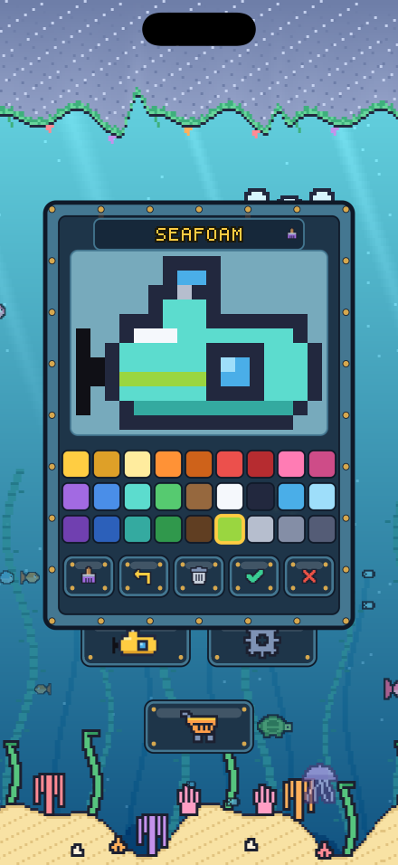
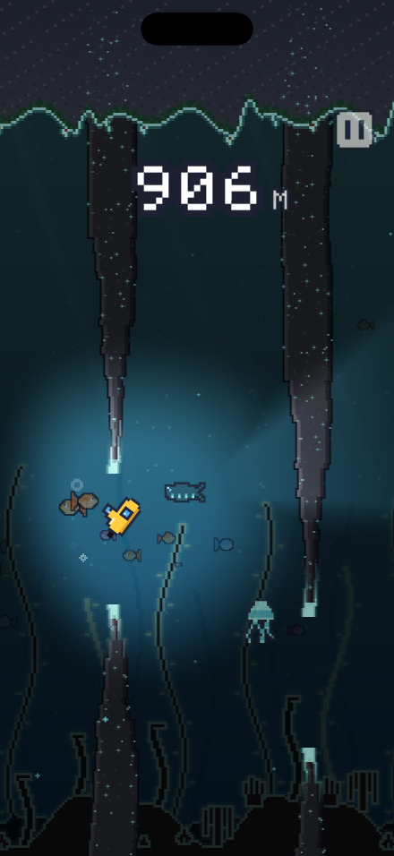

Fifty-one hulls to collect
Sixteen unlock by reaching a depth. Thirty-three are bought with anchors — SHALLOWS at 100 M, REEF at 200, TRENCH at 300, ABYSS at 400, and HADAL and CHALLENGER for the dives that go past 600.
You earn an anchor on every dive that reaches its depth, not just your best one, so a bad streak still leaves you something. A fiftieth SHALLOWS counts as much as your first.
Two of the fifty-one, nobody will tell you how to find.

Draw your own
Five slots in the Hangar are yours to paint. The hull on a grid, twenty-seven colours, a brush, a fill bucket and an undo — and a name you give it on a keyboard the game draws itself.
Every pixel inside the outline belongs to you, the lookout window included: paint over it, redraw it, or leave the hull blank where it was. Only the outline, the periscope and the propeller stay put, because the outline is the shape the game measures your crashes against.
Save it and you are diving it. Your designs follow you to your other devices. The first slot comes with the game.

The water changes as you go
The reef gives way to kelp at 200 M, to a moored minefield at 400 M, and at 600 M to something with arms. Past 800 M the light goes: down there the only thing lit is what your own lamp reaches.
Each band is a little tighter and a little quicker than the one above it. Every dive meets the same water at the same depth, so nobody's run is luckier than anybody else's.
Depth, not points
Your score is how far down you got, run as an odometer that keeps the distance you covered even if the dive ends between two columns.
Built to be fair
Collision follows the drawn art, not a box around it. If you can see daylight through a gap, you fit through it.
Made from scratch
Every sprite, every sound effect and the whole soundtrack were written for this game. No stock art, no asset packs.
Plays anywhere
No account. No internet needed. No timers, no lives to wait for, nothing asking you to come back tomorrow.
One life per dive
Your submarine floats upward on its own. Tap to fire the thrusters and dive. Touch the roof and the run is over.
Two things for sale
Free, with a banner across the top. One purchase removes it for good, and one opens the other four drawing slots. Nothing else, and nothing timed.